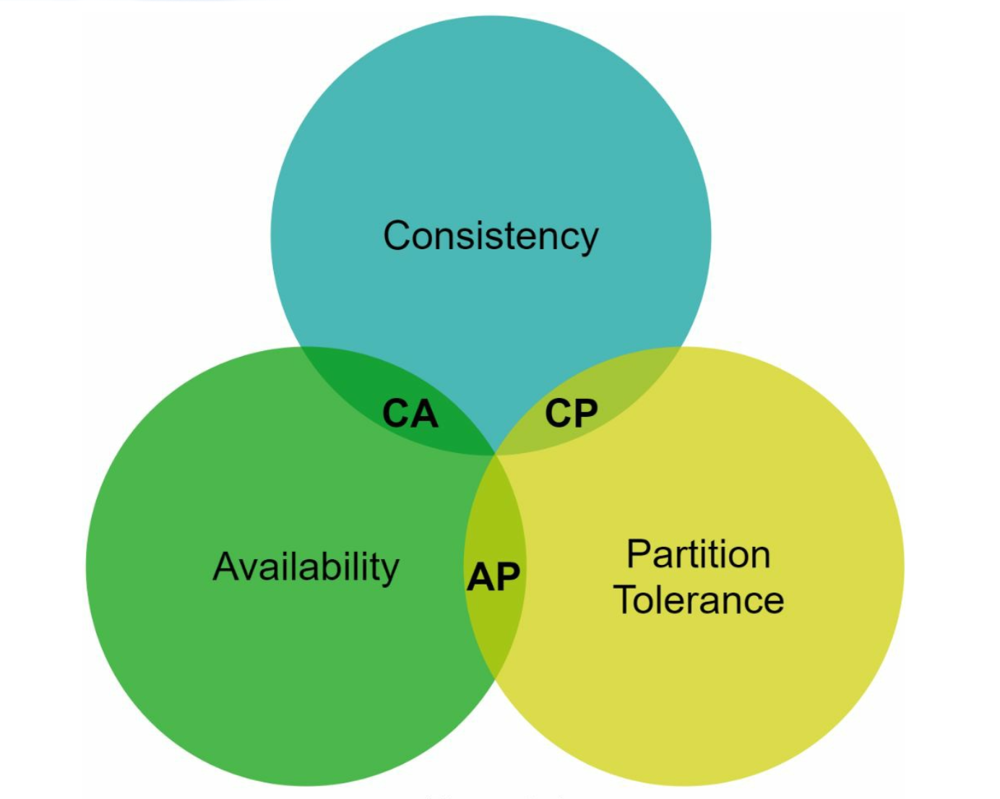
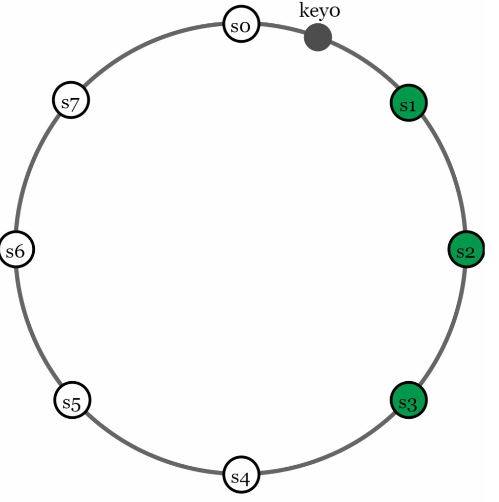
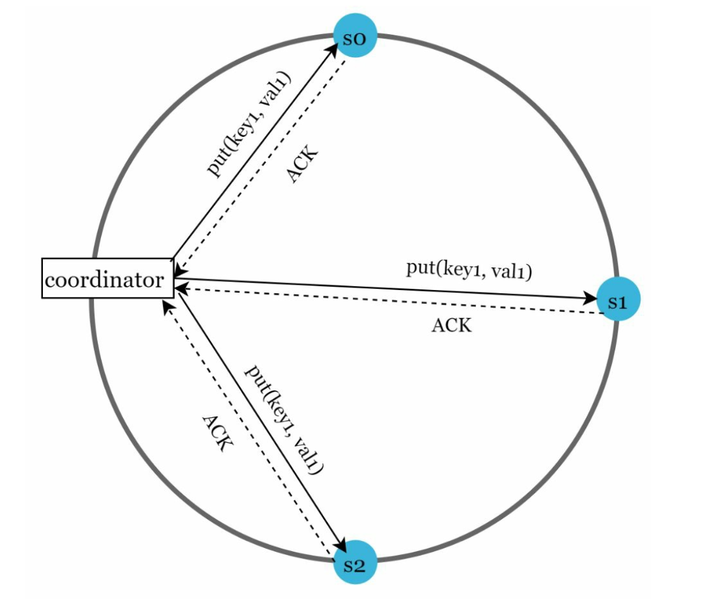
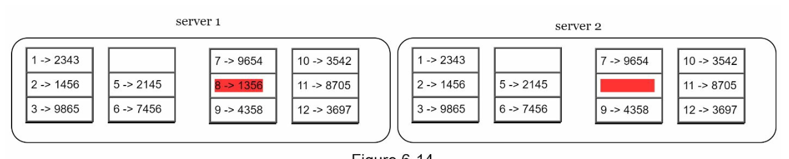
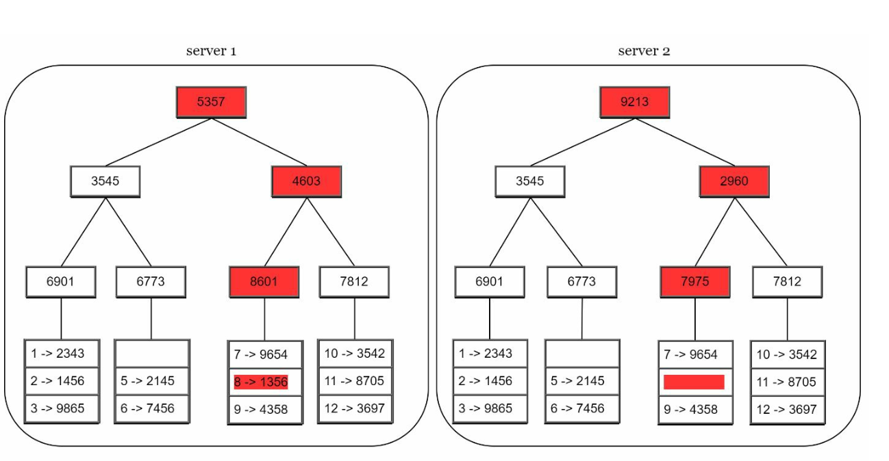
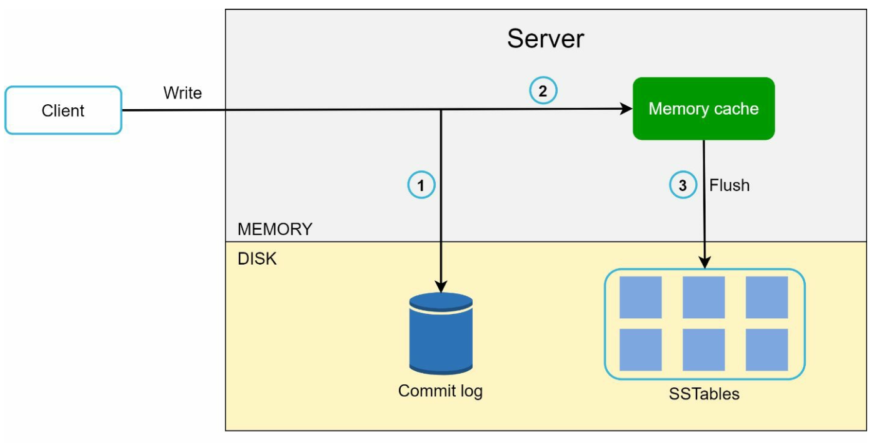
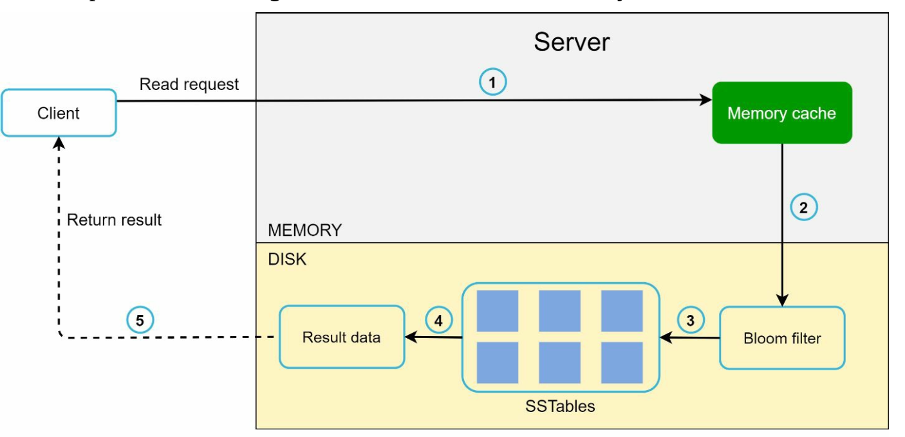
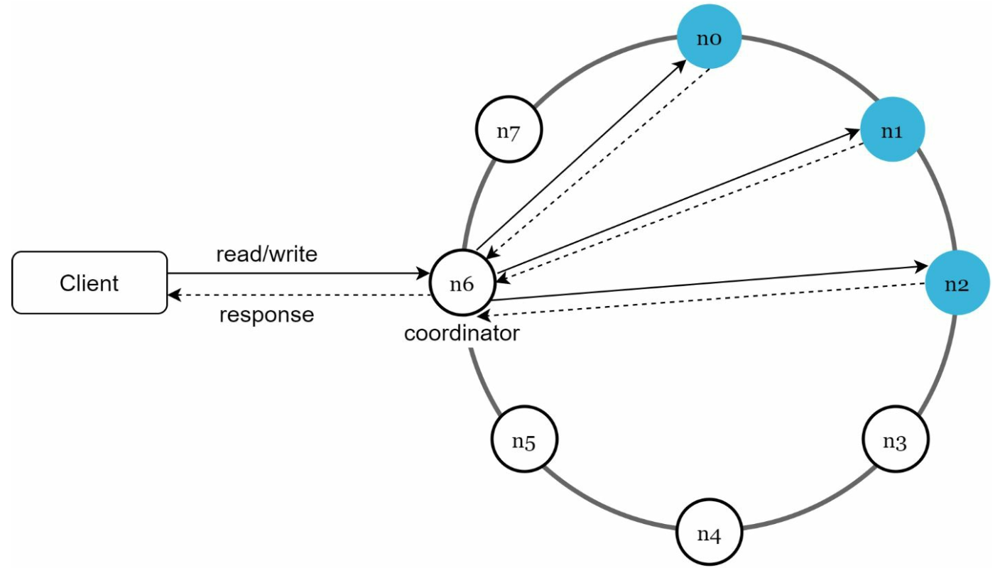

第 6 章：设计一个键值存储
原章节：Design a Key-Value Store · 原项目路径
06. Key-Value Store/
本章导读
你每天都在用键值存储，只是没意识到。Redis 是键值存储，DynamoDB 是键值存储，甚至你写过的 Map<String, User> 也是。
但这章要设计的不是单机版的 HashMap——它要能存 PB 级数据、要能在机器坏掉时继续服务、要能在网络断开时仍然让用户读写。一旦数据被拆到几十台机器上，"存进去"和"读出来"这两件最基础的事，就变成了一堆艰难的取舍。
学完这一章，你应该能回答：为什么 CAP 定理不是"三选二"？R + W > N 这个公式凭什么能保证强一致？两台机器同时改了一个值，系统怎么知道发生了冲突？机器永久下线后，几 TB 的数据怎么用最少的流量对齐？
你将学到
- 单机键值存储的天花板在哪，为什么必须走向分布式
- CAP 定理的准确含义，以及为什么它常被误读成"三选二"
- PACELC 定理：即使没有网络分区，一致性依然要付出代价
- 一致性哈希如何做数据分片，虚拟节点如何解决异构机器问题
- Quorum 读写模型与
R + W > N的推导，以及各种 W/R 组合的取舍 - 向量时钟如何检测"两个版本同时发生"的冲突
- 故障处理三件套：Gossip 协议、Sloppy Quorum + Hinted Handoff、Merkle 树
- 以 Cassandra 为例的写入路径与读取路径
1. 什么是键值存储：从一个 HashMap 说起
键值存储（Key-Value Store） 是一类非关系型数据库，数据以「键值对（Key-Value Pair）」的形式存储。每个键（key）唯一，通过键就能取到值（value）。
它对外的接口极其简单，只有两个操作：
put(key, value)：写入数据。get(key)：读取数据。
就是这么简单。没有 JOIN，没有事务，没有 SQL 解析器——正因为放弃这些东西，它才能做到极高的读写性能和近乎无限的扩展能力。
本章的设计目标
我们要设计的是一个分布式的、高可用的键值存储，约束条件如下：
| 约束 | 说明 |
|---|---|
| 数据规模 | 键值对很小（< 10 KB），但总量极大 |
| 可用性 | 高可用，部分节点故障不影响服务 |
| 扩展性 | 自动扩缩容，加机器就能扛更多流量 |
| 一致性 | 可调（Tunable）——业务自己选要强一致还是最终一致 |
| 延迟 | 低延迟 |
注意"可调一致性"这一点。 它不是"我们尽量做到一致"，而是把一致性做成一个可以配置的参数。同一套系统，A 业务配成强一致，B 业务配成最终一致。这是 Dynamo 系数据库（Cassandra、Riak）最核心的设计哲学，本章后面讲的
W、R两个参数就是它的实现方式。
单机版本：先跑起来再说
最朴素的实现：用一个「哈希表（Hash Table）」把键值对存在内存里。
优化手段也很直觉：
- 数据压缩：键值对通常有大量重复前缀，压缩能省下可观内存。
- 冷热分离：不常访问的数据放到磁盘上，把宝贵的内存留给热点数据。
但单机方案有个无法绕开的硬伤：内存是有上限的。 一台机器装 256 GB 内存已经很奢侈了，可生产环境的数据量动辄 TB 起步。内存塞不下，就只能走向分布式。
2. 分布式键值存储与 CAP 定理
分布式键值存储（Distributed Key-Value Store） 把数据分散到多台服务器上。一旦这么做，一个绕不开的问题立刻出现：网络会断，机器会坏，这时候系统该保什么、该舍什么？
这就是 CAP 定理要回答的问题。
CAP 定理的三个字母
| 字母 | 名称 | 含义 |
|---|---|---|
| C | 一致性（Consistency） | 所有客户端在同一时刻看到同样的数据 |
| A | 可用性（Availability） | 每个请求都能得到响应，即使部分节点已经宕机 |
| P | 分区容错性（Partition Tolerance） | 网络分区（节点之间消息丢失或延迟）时系统仍能继续运行 |

这里有个被广泛误传的说法：「CAP 只能三选二」
你大概在网上见过这张图，被解释成"三个只能选两个，所以系统分为 CP、AP、CA 三类"。这个说法不准确，而且会误导你的设计思路。
准确的表述是：
在分布式系统中，网络分区（P）是客观存在的物理事实，不是你能"选择"放弃的东西。 网线会被挖断、交换机固件会有 bug、机房之间的专线会抖动。你不能在架构评审时说"我们这个系统决定不支持分区容错"——因为分区该来还是会来。
所以 P 是必选项。CAP 真正要你做的选择是：当分区真的发生时，你要保 C 还是保 A。
这就是为什么原文明确写道：CA 系统在现实世界中不存在。所谓"CA 系统"其实就是单机系统——没有网络，自然没有分区，但也就没有分布式。
分区发生时到底在纠结什么
假设有三台节点 n1、n2、n3，现在 n3 和 n1、n2 之间的网络断了。

此时会出现两种不一致：
- 用户往 n1 或 n2 写入的新数据，传不到 n3，n3 上的数据变旧了。
- 用户往 n3 写入的新数据，传不到 n1、n2，n1、n2 上的数据变旧了。
现在一个客户端来读数据，你必须做选择：
- 选 CP（保一致性）：把 n1、n2 上的写操作全部阻塞，直到分区恢复。客户端会收到错误或超时——服务不可用了，但数据是准的。
- 选 AP（保可用性）：n1、n2 继续接受读写，哪怕可能返回旧数据。等分区恢复后再把数据同步给 n3——服务一直可用，但可能读到脏数据。
注意这里的取舍是"分区期间"的取舍，不是永久的。 分区恢复后，AP 系统会通过后面要讲的「反熵（Anti-Entropy）」机制把数据补齐。
典型系统
| 类型 | 保什么 | 舍什么 | 典型场景 |
|---|---|---|---|
| CP | 一致性 + 分区容错 | 分区期间牺牲可用性 | 银行转账、库存扣减、分布式锁 |
| AP | 可用性 + 分区容错 | 分区期间牺牲一致性 | 购物车、点赞数、社交动态、DNS |
| CA | 一致性 + 可用性 | 分区容错（现实中不存在） | 单机数据库 |
怎么判断业务该选哪个？ 问自己一个问题："读到旧数据"和"服务不可用"，哪个后果更严重？ 银行扣款读到旧余额 → 会重复扣钱，必须 CP。 朋友圈点赞数少算一个 → 用户根本不会发现，AP 更划算。
补充：CAP 之外还有 PACELC
CAP 定理有个被长期诟病的短板：它只描述了"分区发生时"的行为。可现实中 99.9% 的时间网络是正常的，那这时候就没有取舍了吗？
有的。2012 年 Daniel Abadi 提出了 PACELC 定理来补上这一块：
P（Partition）发生时，在 A（Availability）和 C（Consistency）之间选； E（Else，即没有分区时），在 L（Latency，延迟）和 C（Consistency）之间选。
换句话说：没有分区的时候，一致性依然不是免费的，它的代价是延迟。
为什么？因为要保证强一致，写操作就必须等待足够多的副本确认收到数据。等待是需要时间的——跨机房一次往返可能就是几十毫秒。如果你愿意放弃一点一致性（比如读本地副本，不等待同步），延迟就能大幅下降。
用 PACELC 的记号来标注几个真实系统：
| 系统 | 分区时（P → A or C） | 无分区时（E → L or C） | 完整标注 |
|---|---|---|---|
| Dynamo / Cassandra（默认一致性级别 ONE） | 选 A | 选 L | PA/EL |
| Riak（默认配置） | 选 A | 选 L | PA/EL |
| BigTable / HBase | 选 C | 选 C | PC/EC |
| VoltDB / 传统关系型数据库 | 选 C | 选 C | PC/EC |
这张表对初学者最大的价值：它告诉你**"AP 系统"和"低延迟"不是一回事**。Cassandra 是 PA/EL——它不仅在分区时选可用性，在正常运行时也选择用延迟换一致性。所以它默认的读操作可能读到旧数据，这不是 bug，是设计。 面试时如果你能说出"Cassandra 是 PA/EL 系统"，比只说"Cassandra 是 AP 系统"要高一个层次。
注意：数据库的一致性行为高度依赖配置。Cassandra 可以通过把
R、W调大（如QUORUM）来获得强一致，此时它在 E 分支上就变成了EC。所以标注一个系统时，一定要说明是"默认配置"还是"特定配置"。
3. 数据分片：一致性哈希
数据量太大，单机放不下，就必须分片（Partitioning / Sharding）：把数据按某种规则分散到多台服务器上。
最直觉的做法，以及它为什么不行
最直觉的做法是取模：服务器编号 = hash(key) % N。
问题在于 N 会变。假设你现在有 4 台服务器，某天扩容到 5 台，那么 hash(key) % 4 和 hash(key) % 5 的结果对绝大多数 key 都不一样——几乎全部数据都要搬家。这个迁移量在生产环境是不可接受的。
「一致性哈希（Consistent Hashing）」 解决了这个问题：加一台服务器，只有大约 1/N 的数据需要迁移。

工作原理
- 把哈希值空间想象成一个环（通常取
0 ~ 2^32 - 1，首尾相接）。 - 每台服务器用自己的 IP 或名字做哈希，落到环上的某个位置。
- 每个 key 也做哈希，落到环上。
- 从 key 的位置出发，顺时针走，遇到的第一个服务器就是它该去的机器。
虚拟节点：解决两个问题
朴素的一致性哈希有两个毛病：
- 数据倾斜：环上的位置是哈希出来的，可能不均匀。运气不好时，某台服务器负责的区间特别大，扛了 80% 的数据。
- 无法表达机器能力差异：新买的机器比老机器强 4 倍，凭什么只能分到同样多的数据？
解法是虚拟节点（Virtual Node，简称 vnode）：不让一台物理服务器在环上只出现一次，而是出现很多次（比如 150 次），每次的位置不同。物理服务器的虚拟节点数量与它的容量成正比——性能强 4 倍的机器，就分配 4 倍的虚拟节点。

这样带来两个好处：
- 负载均衡：虚拟节点数量一多，每个物理节点分到的区间数量趋于平均，倾斜问题基本消失。
- 异构支持（Heterogeneity）：机器能力可以用虚拟节点数量精确表达。
一句话记住虚拟节点的作用：把"一台机器"在环上拆成"很多个点"，既让分布更均匀，又让机器的强弱可以被量化。
4. 数据复制：让数据有备份
分片解决了"存不下"，但没解决"机器坏了怎么办"。如果一台机器永久下线，它负责的那段环上的数据就全丢了。
「数据复制（Replication）」 的思路是：同一份数据存到 N 台不同的服务器上。
副本怎么选
在一致性哈希环上选副本的规则很直观：
- 先按常规方法找到 key 应该归属的那台服务器（顺时针第一个）。
- 继续顺时针往下走，把接下来遇到的前
N - 1台服务器也作为副本。 - 关键细节：如果遇到的是同一个物理服务器的虚拟节点，要跳过，继续往后找，直到凑齐
N台不同的物理机器。
第 3 点很重要。如果不跳过虚拟节点，你可能会把三个副本全放在同一台物理机上——那台机器一挂，三个副本同时消失，复制就白做了。

跨数据中心放置副本
副本不应该都放在同一个机房。理想做法是：把副本分散到不同的数据中心。
原因很直接：单台机器会坏（概率高，影响小），整个机房也会坏（概率低，影响大）。如果三个副本全在同一个机房，一次机房级故障就会让数据永久丢失。
原笔记这里有一处笔误：原文写的是"Place replicas in distinct data centers to improve reliability in case of virtual nodes"（把副本放在不同数据中心，以在虚拟节点的情况下提高可靠性）。这里的 "virtual nodes" 显然是 "node failures"（节点故障）的笔误——虚拟节点和数据中心的可靠性没有任何关系。详见文末【勘误与补充】。
5. 一致性：Quorum 与 R + W > N
数据复制到了 N 台机器上，新的问题来了：用户写一个值，是写完一台就返回成功，还是等所有 N 台都写完？
这就是「法定人数（Quorum）」要解决的取舍。
三个参数
| 参数 | 名称 | 含义 |
|---|---|---|
| N | 副本总数（Replica Count） | 一份数据总共存几份 |
| W | 写法定人数（Write Quorum） | 一次写操作必须收到 W 个副本的确认，才算成功 |
| R | 读法定人数（Read Quorum） | 一次读操作必须等到 R 个副本返回结果，才算成功 |

核心规则：W + R > N
只要满足 W + R > N，就能保证强一致性。
这个公式看起来像变魔术，其实原理是鸽巢原理（Pigeonhole Principle），推导只有两步：
第一步：一次写入会更新至少 W 个副本。一次读取会询问至少 R 个副本。
第二步：如果 W + R > N，那么"被写入的副本集合"和"被读取的副本集合"必然有交集。
用反证法看更清楚：假设两个集合没有交集，那么它们的元素总数 W + R 最多就是 N（因为总共只有 N 个副本）。但条件说 W + R > N，矛盾。所以交集一定存在。
第三步：既然读操作问到的 R 个副本里，至少有一个持有最新写入的值，那么只要读取时从 R 个响应里挑选版本号最高的那个返回，就一定能读到最新数据。
直觉版解释：把 N 个副本想象成 N 个同学，老师要通知一件事。只要老师通知的人数（W）和被问的人数（R）加起来超过全班人数（N），那么被问的人里一定有至少一个听过通知。你只要让被问到的同学投票选"最新版本"，就能拿到正确答案。
各种 W / R 组合的取舍
以最常见的 N = 3 为例：
| 配置 | 满足 W+R>N？ |
强一致 | 写性能 | 读性能 | 适用场景 |
|---|---|---|---|---|---|
W = 3, R = 1 |
4 > 3 ✓ | 是 | 慢（要等 3 台） | 快（只问 1 台） | 读多写少 |
W = 1, R = 3 |
4 > 3 ✓ | 是 | 快（只等 1 台） | 慢（要问 3 台） | 写多读少 |
W = 2, R = 2 |
4 > 3 ✓ | 是 | 中等 | 中等 | 最常用（均衡） |
W = 1, R = 1 |
2 ≤ 3 ✗ | 否 | 最快 | 最快 | 能容忍最终一致 |
W = 2, R = 1 |
3 ≤ 3 ✗ | 否 | 中等 | 快 | 能容忍最终一致 |
这里要纠正一个流传很广的简化说法。 你可能会看到"
W = 1就是写快但可能读到旧数据"——这个说法只在 R 也小的时候成立。严格来说：
W = 1, R = 3：虽然只等 1 台写确认，但因为要问 3 台读，1 + 3 > 3仍然满足强一致。它只是写快、读慢，并不牺牲一致性。W = 1, R = 1：这才是不一致的组合，因为1 + 1 = 2 ≤ 3，读到的副本和写入的副本可能完全不重叠。W = 1真正需要警惕的风险不是"读到旧数据"，而是"持久性"：如果唯一确认写入的那台机器在数据复制到其他副本之前就宕机了，这次写入就永久丢失了。记住判断标准只有一个：看
W + R是否大于N，而不是单独看 W 或 R 是大是小。
一致性模型
W、R 调节的最终效果，落到三种一致性模型上：
- 强一致性（Strong Consistency）：读操作一定能读到最近一次写入的结果。任何客户端、任何时刻都不会看到旧数据。代价是延迟高、可用性低。
- 弱一致性（Weak Consistency）：读操作可能读不到最新的值。系统不保证什么时候能读到新值。
- 最终一致性（Eventual Consistency）：弱一致性的特例——只要给足够的时间，所有更新都会传播到所有副本，最终所有副本一致。
最终一致性是 AP 系统的默认选择。它不是"不管一致性"，而是"把一致性从'立刻保证'放宽到'最终保证'"。这个放宽换来了可用性和低延迟，是绝大多数互联网业务的正确选择。 但要小心：最终一致性对**读己之写（Read-Your-Own-Writes）**不友好。用户刚保存了资料，刷新页面却看到旧内容——这是实际业务中投诉率很高的一类 bug，需要单独处理（比如写后一段时间内强制读主副本）。
6. 冲突解决：版本化与向量时钟
有了副本，就必然有不一致：网络一抖，两个副本同时被修改，就会出现两个互相矛盾的版本。

版本化（Versioning）
思路是：把每一次数据修改都当成一个不可变的新版本（Immutable Version），而不是原地覆盖。
比如服务器 1 把用户的 name 改成 "Alice"，服务器 2 同时把 name 改成 "Bob"。现在系统里有两个版本 v1 和 v2，它们互相冲突——系统必须知道"这两个修改是并发的"，才能要求上层去解决。
向量时钟（Vector Clock）
向量时钟就是用来判断版本之间关系的数据结构。它的形式是一串 [服务器, 版本号] 对：
D([S1, v1], [S2, v2], ..., [Sn, vn])
其中 D 是数据项，Si 是服务器标识，vi 是该服务器上的版本计数器。
更新规则（数据在服务器 Si 上被修改时）：
- 如果向量时钟里已经有 Si 这一项，就把它的计数器加 1。
- 如果没有 Si，就新增一项
[Si, 1]。
冲突判断规则：
| 情况 | 判断条件 | 含义 |
|---|---|---|
| 无冲突 | 版本 X 的所有计数器都 ≤ 版本 Y 的对应计数器 | X 是 Y 的祖先，Y 更新 |
| 有冲突 | 至少存在一个计数器，X 中比 Y 中大，同时另一个计数器 Y 比 X 中大 | X 和 Y 是兄弟（并发修改） |
一个完整例子
假设数据 D 有三个副本 S1、S2、S3。
① 初始状态：客户端在 S1 上写入 D。
D1([S1, 1])
② 同一个写入传播到 S2、S3：此时三个副本都是 D1([S1, 1])，一致。
③ 网络分区，两个副本同时被修改：
- 用户 A 在 S1 上修改 D → S1 的计数器加 1 →
D2([S1, 2]) - 用户 B 在 S2 上修改 D → S2 不在时钟里，新增一项 →
D3([S1, 1], [S2, 1])
④ 判断冲突：
比较 D2([S1, 2]) 和 D3([S1, 1], [S2, 1])：
D2里 S1 = 2，D3里 S1 = 1 → D2 在这一项上更大。D3里 S2 = 1，而D2里根本没有 S2 这一项 → 可以理解为 0，所以 D3 在这一项上更大。
两边各有胜负 → 判定为并发冲突（兄弟版本）。
⑤ 冲突解决：向量时钟只负责发现冲突，不负责解决。解决必须交给业务逻辑：
- 让用户决定：像购物车那样，把两个版本都展示出来，让用户自己合并（Dynamo 的做法）。
- 自动合并：如果是集合类型，可以取并集（把两个购物车合并）。
- 最后写入者胜出（Last Write Wins, LWW）：按时间戳挑一个。简单，但会静默丢数据，只在能容忍丢失的场景用。
向量时钟的代价
- 客户端变复杂：客户端必须理解版本概念，还要实现合并逻辑。
- 时钟会膨胀：服务器越多、修改越频繁，向量时钟的条目越多。需要截断策略（Trimming）——比如给条目数设上限，超了就丢弃最老的条目（代价是可能漏判某些冲突）。
向量时钟 vs 版本向量：别把它们混为一谈
这两个词经常被混用，但严格来说有区别：
| 向量时钟（Vector Clock） | 版本向量（Version Vector） | |
|---|---|---|
| 追踪对象 | 事件的因果关系 | 数据副本的版本关系 |
| 计数器含义 | 每个进程上发生过多少个事件 | 每个副本上该数据被改了多少次 |
| 递增时机 | 每个事件（含内部事件、发消息、收消息）都递增 | 只有数据被修改时才递增 |
| 典型用途 | 分布式调试、因果一致性、快照 | 乐观复制、冲突检测 |
Dynamo 用的到底是什么？ Dynamo 论文里写的是 "vector clock"，但它的条目是 [节点, 计数器] 形式，而且只在数据被修改时递增——从定义上看，它更接近版本向量。
面试时怎么说才稳妥：可以这样表述——"Dynamo 用的机制论文里叫 vector clock，实质上是对每个副本维护一个版本计数器，属于版本向量的用法。它检测并发更新的能力是一样的，只是严格来说追踪的是数据版本而不是事件因果。"这样既展示了准确性，又不会显得在抠字眼。
7. 处理故障
分布式系统里，故障是常态而不是异常。要处理三类：检测故障、临时故障、永久故障。
7.1 故障检测：Gossip 协议
最基本的原则：不能因为另一台服务器说"n3 挂了"，就相信 n3 挂了。
为什么？因为可能是 n3 和那台服务器之间的网络出了问题，而 n3 本身活得好好的。如果草率地判定 n3 下线，然后启动数据迁移，就会产生大量无谓的数据搬运——等网络恢复后还要再搬回来。
所以判断一台机器下线，至少需要两个独立的信源。
「Gossip 协议（流言协议）」 是达成这种"集体判断"的常用手段：

工作方式：
- 每个节点维护一份成员列表，记录所有节点的 ID 和心跳计数器（Heartbeat Counter）。
- 每个节点周期性地把自己的心跳计数器加 1。
- 每个节点周期性地随机挑选若干节点，把自己的心跳信息发给它们。
- 收到消息的节点据此更新自己的成员列表（如果对方的心跳比自己记录的新，就更新）。
- 如果某个节点的心跳计数器连续多个周期没有增长，就判定它下线。
为什么叫"流言"？ 因为它的传播方式和八卦一模一样：你告诉三个朋友，三个朋友各告诉三个朋友……信息以指数速度扩散到全网。它的优点是完全去中心化，没有任何一个节点需要知道全局状态；缺点是收敛需要时间（通常是秒级），而且信息传播有随机性，不能保证某一时刻全网认知完全一致。 Cassandra、Riak、Consul、Redis Cluster 都用 Gossip 做集群成员管理。
7.2 临时故障：Sloppy Quorum + Hinted Handoff
节点短暂宕机（重启、GC 卡顿、网络抖动）是最常见的故障。如果严格坚持 W + R > N 的法定人数要求，那么只要有几个节点同时不可用，整个系统就没法读写了。
「Sloppy Quorum（宽松法定人数）」 放宽了这个要求：

- 不再严格要求必须是"那 N 台指定的副本"响应。
- 而是在哈希环上跳过故障节点，继续往后找，取前 W 个健康节点完成写、前 R 个健康节点完成读。
- 故障节点被暂时忽略。
这样做的直接效果是：可用性大幅提升——只要还有足够的健康节点，服务就不中断。
但代价是：数据被写到了"本来不该存这个 key"的节点上。如果不做后续处理，这些数据就成了孤儿。
「Hinted Handoff（暗示移交）」 就是收尾机制：
- 当某个节点代替故障节点接收了写入时，它会记一条"提示"（hint），说明"这条数据本来是给 n3 的"。
- 等 n3 恢复上线后，这个节点把提示的数据推回给 n3，实现数据一致性。
这两个机制必须成对使用。 只用 Sloppy Quorum 不用 Hinted Handoff，等于让数据永久丢失在错误的节点上。面试时如果你能主动把两者配对说出来，是明显的加分项。
7.3 永久故障：Merkle 树
节点永久下线（硬盘损坏、机器报废）后，需要把它的副本数据补到一台新机器上。问题是：怎么知道两台机器上的数据哪里不一样？
最笨的办法是把两边所有数据都拉出来逐条比对——几 TB 的数据，网络传输和比对的开销都是灾难性的。
「Merkle 树（Merkle Tree，也叫哈希树 Hash Tree）」 是解决这个问题的经典数据结构。它能让两台副本只传输真正不一致的那部分数据。
树的结构
- 叶子节点（Leaf Node）：存储各个数据块的哈希值。
- 非叶子节点（Non-Leaf Node）：存储它所有子节点哈希值合并后再哈希的结果。
- 根哈希（Root Hash）：代表整棵树所覆盖的全部数据的综合状态。
构建过程（四步）
Step 1：把键空间划分成桶（Bucket）
比如把 0 ~ 2^32 的键空间切成 4 段，每段一个桶。

Step 2：对桶内每个 key 做哈希
用均匀哈希函数把桶里所有 key 各自算出一个哈希值。

Step 3：把桶内所有 key 的哈希合并成一个桶哈希

Step 4：逐层向上合并，直到算出根哈希
两个相邻桶的哈希合并再哈希 → 得到上一层节点；再两两合并 → 最终得到根哈希。

同步过程（这是重点）
现在有两台副本 A 和 B，各自有一棵 Merkle 树。同步流程是：
- 先比较两棵树的根哈希。
- 根哈希相同 → 说明两边数据完全一致，同步结束，零数据传输。
- 根哈希不同 → 说明有差异，但不知道在哪。于是分别比较左子节点的哈希：
- 左子节点哈希相同 → 左半边整棵子树的数据一定都一致，直接整块跳过。
- 左子节点哈希不同 → 差异在左半边，继续往左递归。
- 再比较右子节点，同样的逻辑。
- 一路递归下去，最终定位到具体哪几个桶不一致。
- 只同步这几个桶的数据。
为什么这样快
关键在于第 3 步的"整块跳过"：
- 暴力比对：N 条数据，全都要比 → 复杂度
O(N)。 - Merkle 树比对：只需要沿着"有差异的那条路径"往下走 → 复杂度
O(log N)。
举个具体例子：假设有 100 万个键值对，分成 1024 个桶。如果只有一个桶里的 10 条数据不一致：
- 暴力比对：传输并比对 100 万条数据。
- Merkle 树：比较 1 次根哈希 + 约 10 层子节点哈希（因为 1024 = 2^10）+ 最后同步那 1 个桶的数据。传输量从 100 万条降到 10 条。
Merkle 树的优势总结：
| 优势 | 说明 |
|---|---|
| 高效 | 只同步不一致的数据，大幅降低网络传输 |
| 可扩展 | 数据量越大，相对收益越明显（O(log N) vs O(N)） |
| 可靠 | 通过哈希保证数据一致性，篡改或损坏都能被检测出来 |
顺带一提：Merkle 树也是区块链的核心数据结构。比特币用 Merkle 树来验证"某笔交易是否在某个区块里"，原理完全相同——只需要拿到从该交易到根哈希的那条路径（约
log N个哈希值），就能验证，而不用下载整个区块。学一个概念，两个领域都用得上。
8. 处理数据中心故障
单个节点的故障处理完了，还要考虑整个数据中心挂掉的情况。历史上这不是假设——机房断电、光缆被挖断、冷却系统故障都真实发生过。
策略是：把数据复制到多个数据中心，并且做好跨机房的流量调度。
- 数据层面：副本跨机房分布。通常的做法是"同机房 2 副本 + 异地机房 1 副本"这种组合，兼顾同机房的低延迟和跨机房的容灾。
- 流量层面：某个机房整体不可用时，通过 DNS 或全局负载均衡把用户流量切到其他机房。
- 一致性层面：跨机房的复制延迟远高于同机房，所以跨机房通常采用异步复制，并接受跨机房的最终一致性。
9. 读写路径：以 Cassandra 为例
前面讲的是架构层面的设计。落到具体实现，一条数据是怎么写进去、又是怎么读出来的？
写入路径

- 写「提交日志（Commit Log）」：数据首先顺序追加到磁盘上的日志文件。这一步是持久性保证——即使机器立刻断电，重启后也能从日志恢复。
- 写「内存表（Memtable）」：同时写入内存中的数据结构。这一步是性能保证——所有读操作优先命中内存。
- 刷盘到「SSTable（Sorted String Table，排序字符串表）」：当内存表写满（达到阈值），把它整体顺序写到磁盘，形成一个不可变的 SSTable 文件。然后清空内存表，继续接收新数据。
为什么要先写日志再写内存？ 这是经典的 WAL（Write-Ahead Log，预写日志） 模式。内存虽然快，但断电就没了。如果只写内存，机器一挂，最近几秒的写入全部丢失。日志是顺序写的，速度很快（比随机写快几个数量级），所以这个"额外的"步骤带来的延迟开销很小，却换来了"任何时刻断电都不丢数据"。 数据库领域有句名言："先写日志，再改数据"。MySQL 的 redo log、PostgreSQL 的 WAL、Kafka 的分段日志，本质都是这个模式。
读取路径


- 先查内存表（Memtable）：如果命中，直接返回，速度最快。
- 内存未命中：这时要去磁盘上的多个 SSTable 里找。但 SSTable 可能有很多个，逐个打开查找代价很高。
- 用「布隆过滤器（Bloom Filter）」快速排除：布隆过滤器能告诉你"这个 key 一定不在这个 SSTable 里"或者"可能在"。它能确定性地排除绝大多数不包含该 key 的文件，大幅减少磁盘 IO。
- 读取并合并：从布隆过滤器判定"可能包含"的 SSTable 中读取数据，按时间戳合并出最新版本，返回给客户端。
布隆过滤器在这里的角色是"省掉无用的磁盘查找"。 注意它的特性：说"不在"就一定不在（没有假阴性），说"在"则有一定概率是假的（有假阳性）。这个"宁可错杀不可放过"的特性，正好适合做前置过滤——误判最多是白读一次文件，不会漏数据。
补充：Compaction（压实）。SSTable 会越积越多，同一个 key 的多个版本散落在不同文件里。后台的 compaction 进程会定期把多个 SSTable 合并成一个，丢弃被覆盖的旧版本和已删除的墓碑标记。这是 Cassandra 维护成本的主要来源之一，也是写放大（Write Amplification）的根源。
10. 最终架构
把所有组件拼起来，得到完整的架构图：

- 客户端通过简单的 API 与键值存储交互：
get(key)和put(key, value)。 - 协调者（Coordinator）：充当客户端和键值存储之间的代理节点。客户端连上任意一个节点，这个节点就充当协调者，负责转发请求、收集响应、返回结果。
- 节点通过一致性哈希分布在环上。
- 系统完全去中心化（Decentralized）：增加和移除节点可以自动完成，不需要人工干预。
- 数据在多个节点上有副本。
- 没有任何单点故障（SPOF）：每个节点的职责完全相同，任何一个节点挂了，它的工作可以被其他节点接管。
"每个节点职责相同"这件事的价值容易被低估。 如果系统里有一个"主节点"专门负责分配数据、管理元信息，那它就是单点故障——它挂了整个系统就瘫痪，而且它会成为性能瓶颈。让所有节点对等，是 Dynamo 系架构最重要的设计决策，代价是成员管理、数据分布、故障检测全部要用去中心化协议（Gossip、一致性哈希、Merkle 树）来实现，复杂度更高。
勘误与补充
本节逐条指出原笔记中不准确、过时或缺失的地方。
勘误 1：CAP 定理被简化成"三选二"，这个框架是错的
- 原文说法：原文开篇写 "According to CAP theorem only two of the three guarantees can be achieved"（CAP 定理下只能满足三个保证中的两个），并把系统分为 CP、AP、CA 三类。
- 问题：前半句的"三选二"框架具有误导性。它暗示 P 是一个可以主动"放弃"的选项，仿佛只要选择 CA 就能得到一个既一致又可用、只是不支持分区的系统。但网络分区不是设计选项，而是物理现实——你无法通过架构决策让它不发生。
- 正确说法：P 在分布式系统中是必选项。CAP 真正描述的是"当分区发生时，系统在 C 和 A 之间如何取舍"。所以现实世界中只存在 CP 系统和 AP 系统，不存在 CA 系统。
- 延伸：原笔记其实在下文自己纠正了这一点（明确写了 "a CA system cannot exist in real-world applications"），这是正确的。但它前面的"三选二"框架仍然会误导读者，所以这里单独点出来。面试时如果被问"CAP 三选二怎么选"，正确回答是："这个前提本身就不成立，P 是必选的，实际是在 C 和 A 之间选。"
勘误 2：CAP 中的 C 不是"所有客户端看到同样的数据"
- 原文说法：原文把 Consistency 定义为 "All clients see the same data simultaneously"（所有客户端同时看到相同的数据）。
- 问题：这个定义过于宽泛，容易和"最终一致性"里的"一致性"混淆。CAP 定理中学术意义上的 C，指的是线性一致性（Linearizability）——一个更强的保证。
- 正确说法：CAP 里的 C 要求系统的行为等价于一个单机系统：一旦某次写入返回成功，之后任何客户端的任何读取都必须看到这次写入（或更新的值）。它要求所有操作看起来像是在某个全局时间点上原子地发生的。
- 延伸：区分这一点很重要，因为"最终一致性"也常常被叫做"一致"，但它在 CAP 的框架里属于牺牲了 C的那一类。初学者最容易在这里绕晕。
勘误 3：把"虚拟节点"和"数据中心故障"扯上了关系
- 原文说法："Place replicas in distinct data centers to improve reliability in case of virtual nodes"（把副本放在不同数据中心，以在虚拟节点的情况下提高可靠性）。
- 问题："virtual nodes"（虚拟节点）在这里说不通。虚拟节点是一致性哈希环上的技术概念，和数据中心的可靠性没有任何关系。这是一处明显的笔误。
- 正确说法：应该是 "in case of node failures" 或 "data center outages"——跨数据中心放置副本的目的是抵御节点故障和机房级故障。
- 延伸：原笔记下一节"Handling Data Center Outages"讲的正是这个主题，内容是对的，只是上一节这句话表述错了。
勘误 4：W = 1 不等于"可能读到旧数据"
- 原文说法：原文写道 "If W = 1 and R = N, the system is optimized for fast write"（W=1、R=N 时系统为快速写入优化）。这句本身是对的，但很多读者会顺势理解为"W=1 就会读到旧数据"。
- 问题：
W = 1, R = N时，W + R = N + 1 > N，依然满足强一致性。它只是写快、读慢，并没有牺牲一致性。真正的判据是W + R与N的大小关系，而不是单个参数。 - 正确说法：
W = 1需要警惕的是持久性风险——如果唯一确认写入的副本在数据扩散前宕机，这次写入会丢失。要读到旧数据，必须W + R ≤ N。 - 延伸：原笔记列出的 "If W + R <= N, strong consistency is not guaranteed" 是正确的，读者应该以这一条为准来判断。
勘误 5：术语笔误 "vector locks"
- 原文说法：原文小标题写的是 "Versioning and vector locks are used to solve inconsistency problems"。
- 问题：
vector locks（向量锁）不是一个存在的数据结构，是vector clocks（向量时钟）的拼写错误。 - 正确说法：应为向量时钟（Vector Clock）。原笔记同一节下面的小标题就写对了。
补充 1：PACELC 定理
原笔记完全没有提及 PACELC。CAP 只描述分区时的取舍，而 PACELC 补上了"正常运行时的取舍"——即延迟与一致性之间的权衡。详见第 2 节。这是判断一个数据库真实行为特征的关键框架，也是面试中能显著加分的知识点。
补充 2：R + W > N 的推导与直觉
原笔记只给出了结论 W + R > N，没有解释为什么。详见第 5 节。理解"读集合与写集合必然相交"这个鸽巢原理的推导，比记住公式重要得多。
补充 3：Merkle 树的比较过程
原笔记列出了 Merkle 树的构建四步和一句"compare child hashes recursively"，但没有讲清楚为什么这样能减少传输量。详见第 7.3 节。这是本章最值得花时间理解的数据结构。
补充 4：向量时钟与版本向量的区别
原笔记混用了 "vector clock" 的概念，没有区分它和 "version vector"。详见第 6 节。Dynamo 论文里虽然叫 vector clock，但实质更接近版本向量。
补充 5：写入路径中的 Compaction（压实）
原笔记讲了 commit log → memtable → SSTable 的写入路径，但没提 SSTable 会不断累积、需要后台合并。详见第 9 节。这是理解 LSM-Tree 系数据库写放大问题的关键。
补充 6：Sloppy Quorum 必须配合 Hinted Handoff
原笔记把两者列为两个独立条目，没有强调它们必须成对使用。详见第 7.2 节。只用前者会导致数据永久遗留在错误的节点上。
常见误区
| 误区 | 为什么错 | 正确理解 |
|---|---|---|
| CAP 是"三选二" | P（分区容错）不是可选项，网络分区是物理事实 | P 必选，实际是在分区发生时于 C 和 A 之间取舍。CA 系统现实中不存在 |
| CAP 中的 C 就是"数据一致" | CAP 的 C 特指线性一致性，比日常说的"一致"强得多 | 最终一致性在 CAP 框架里属于牺牲 C 的那一类 |
| AP 系统性能一定好 | 可用性和延迟是两个维度。PACELC 中 E 分支才讨论延迟 | Cassandra 是 PA/EL；也有 PA/EC 的系统（如 PNUTS） |
W = 1 就会读到旧数据 |
判据是 W + R 与 N 的关系，不是单个参数 |
W=1, R=N 仍是强一致。W=1 的真实风险是持久性 |
| 一致性哈希能解决数据倾斜 | 它解决的是"节点增减时的迁移比例"，不是"分布是否均匀" | 倾斜要靠虚拟节点和合理的 key 设计 |
| 虚拟节点只是为了让分布更均匀 | 它还能表达机器能力的差异 | 虚拟节点数量应与物理机容量成正比，实现异构支持 |
| 副本数 N 越大越可靠 | N 越大，写延迟越高、一致性维护成本越高 | N 要在可靠性、延迟、成本之间权衡，通常取 3 |
| 向量时钟能自动解决冲突 | 它只负责检测并发冲突，不负责解决 | 解决需要业务逻辑：用户合并、集合取并集、或 LWW（会丢数据） |
| 节点宕机了应该立刻开始数据迁移 | 可能只是网络抖动，误判会导致无谓的数据搬运 | 至少需要两个独立信源确认，用 Gossip 做集体判断 |
| Merkle 树用来存储数据 | 它存的是哈希，不存原始数据 | Merkle 树是校验和索引结构，用于快速定位差异 |
| 布隆过滤器能准确判断元素是否存在 | 它有假阳性，只能说"可能存在" | 说"不在"一定准（无假阴性），说"在"可能不准 |
面试速记
-
一句话概括：本章设计一个去中心化、可调一致性、高可用的分布式键值存储——核心是用一致性哈希分片、用多副本保证可用、用 Quorum 调节一致性、用向量时钟和 Merkle 树处理不一致。
-
必答要点：
- CAP 的准确表述：P 必选，实际是分区时在 C 和 A 之间取舍；CA 系统不存在。
- 数据分片用一致性哈希，虚拟节点解决分布不均和异构机器问题。
W + R > N保证强一致，原理是读写集合必然相交（鸽巢原理）。N=3、W=R=2 是最常用的均衡配置。- 冲突检测用向量时钟：所有计数器都 ≤ 则无冲突，各有大小则为并发冲突。检测归系统，解决归业务。
- 故障处理三件套：Gossip 检测、Sloppy Quorum + Hinted Handoff 应对临时故障、Merkle 树应对永久故障。
-
加分项：
- 主动提到 PACELC，说明 Cassandra 是 PA/EL，并解释"正常运行时的取舍是延迟 vs 一致性"。
- 主动区分向量时钟与版本向量，指出 Dynamo 的实现更接近后者。
- 讲清 Merkle 树的比较复杂度是
O(log N)而非O(N)，并说明"哈希相同则整棵子树跳过"是关键。 - 说明写入路径的 WAL 模式（commit log → memtable → SSTable）以及 Compaction 带来的写放大。
-
高频追问：
- "为什么不能用
hash(key) % N做分片？" → N 变化时几乎全部 key 的归属都会改变，导致全量数据迁移。一致性哈希把迁移量降到约1/N。 - "W + R > N 为什么能保证强一致？"
→ 写入集合大小 W、读取集合大小 R，若
W + R > N则两集合必有交集，读取时从 R 个响应中取版本号最高的即可。前提是读取端要能识别版本号。 - "如果两个数据中心之间的网络断了，你的键值存储会怎么表现？" → 取决于配置。选 CP 则少数派一侧拒绝写入（牺牲可用性）；选 AP 则两侧都继续服务，恢复后通过 Merkle 树做反熵同步，期间可能读到旧数据。
- "Sloppy Quorum 会不会导致数据不一致？" → 会临时不一致，但 Hinted Handoff 会在故障节点恢复后把数据推回去。两者必须配对使用，否则数据会永久遗留在错误的节点上。
- "N = 3 时，如果同时挂了两台机器还能服务吗？" → 要看 W 和 R。若 W=2、R=2，只剩 1 台健康节点时无法满足法定人数，写入会失败。这正是 CP 系统的表现。可以用 Sloppy Quorum 放宽，代价是引入临时不一致。
- "为什么不能用
延伸阅读
- ByteByteGo 系统设计面试课程 — 原笔记的来源
- Dynamo: Amazon's Highly Available Key-value Store — 本章架构的原始论文，强烈建议读第 4 节（向量时钟）和第 5 节（故障处理）
- Cassandra 官方文档：Architecture — 写入路径与 compaction 的工程实现
- PACELC 定理原始论文（Daniel Abadi） — 补上 CAP 缺失的那一半
- Redis Cluster 规范 — 工业界的分片与 Gossip 实现
- Riak：Vector Clocks 文档 — 向量时钟的实战用法与截断策略
- 布隆过滤器误判率计算器 — 交互式验证
m、k与误判率的关系